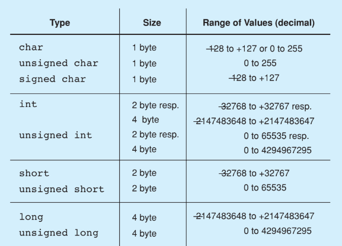

Estruturas de Dados Orientadas a Objetos¶
Material do curso: site da disciplina (CIn/UFPE)
Especificidades de C++¶
C++ é uma linguagem orientada a objetos com grande controle sobre a memória — ao contrário de linguagens como Java ou Python, o próprio programador decide quando alocar e desalocar memória, o que é essencial para implementar estruturas de dados eficientes.
Tipos primitivos¶
C++ oferece uma variedade de tipos inteiros e de ponto flutuante, cada um com um intervalo de valores e um tamanho em memória diferentes:
Tipos inteiros e char:
| Type | Size | Range of Values (decimal) |
|---|---|---|
char |
1 byte | -128 a +127 ou 0 a 255 |
unsigned char |
1 byte | 0 a 255 |
signed char |
1 byte | -128 a +127 |
int |
2 bytes resp. 4 bytes | -32768 a +32767 resp. -2147483648 a +2147483647 |
unsigned int |
2 bytes resp. 4 bytes | 0 a 65535 resp. 0 a 4294967295 |
short |
2 bytes | -32768 a +32767 |
unsigned short |
2 bytes | 0 a 65535 |
long |
4 bytes | -2147483648 a +2147483647 |
unsigned long |
4 bytes | 0 a 4294967295 |
Tipos de ponto flutuante:
| Type | Size | Range of Values | Lowest Positive Value | Accuracy (decimal) |
|---|---|---|---|---|
float |
4 bytes | -3.4E+38 | 1.2E-38 | 6 dígitos |
double |
8 bytes | -1.7E+308 | 2.3E-308 | 15 dígitos |
long double |
10 bytes | -1.1E+4932 | 3.4E-4932 | 19 dígitos |
Fotos do livro-texto (tabelas de tipos)


A linguagem também define uma sequência de caracteres especiais (sequências de escape, como \n, \t, \\), usadas para representar caracteres que não podem ser digitados diretamente em uma string:
| Caractere | Significado | Código ASCII (decimal) |
|---|---|---|
\a |
alert (BEL) | 7 |
\b |
backspace (BS) | 8 |
\t |
horizontal tab (HT) | 9 |
\n |
line feed (LF) | 10 |
\v |
vertical tab (VT) | 11 |
\f |
form feed (FF) | 12 |
\r |
carriage return (CR) | 13 |
\" |
" (double quote) | 34 |
\' |
' (single quote) | 39 |
\? |
? (question mark) | 63 |
\\ |
\ (backslash) | 92 |
\0 |
caractere terminador de string | 0 |
\ooo (até 3 dígitos octais) |
valor numérico de um caractere | ooo (octal) |
\xhh (dígitos hexadecimais) |
valor numérico de um caractere | hh (hexadecimal) |
Foto do livro-texto (tabela de caracteres especiais)

Macros¶
Macros são comandos que permitem a substituição de texto antes de o código ser compilado, usando a diretiva #define:
#define DELAY 10000000L
#define CLS (cout << "\033[2J") // Clear screen
#define LOCATE(z,s) (cout << "\033[" << z << ';' << s << 'H') // Positiona o cursor
Foto do livro-texto (exemplo de macros)

Além do #define, o pré-processador do C++ oferece outras diretivas relacionadas:
| Diretiva | Função |
|---|---|
#define |
Define um macro ou uma substituição de texto. |
#undef |
Cancela a definição de um macro. |
#ifdef |
Executa o bloco de código se o macro foi definido. |
#ifndef |
Executa o bloco de código se o macro não foi definido. |
#if |
Executa um bloco de código se a expressão for verdadeira. |
#elif |
Adiciona uma condição "else if" a um #if. |
#else |
Define um bloco de código a ser executado caso nenhuma condição anterior seja verdadeira. |
#endif |
Finaliza um bloco iniciado por #ifdef, #ifndef ou #if. |
Header files¶
Header files (arquivos de cabeçalho) são arquivos de texto contendo declarações e macros. Usando a diretiva #include, essas declarações e macros passam a poder ser utilizadas no arquivo atual — exemplos conhecidos são <iostream> e <string>. Além das bibliotecas padrão, também é possível criar os próprios header files, separando a interface (o header) da implementação de uma funcionalidade.
iostream¶
<iostream> é o header file para entrada e saída (input/output). Ele contém as stream classes istream e ostream, ambas derivadas da classe ios — que atua como interface comum para as duas, e que, por sua vez, é derivada de ios_base. Há também ifstream, ofstream e fstream, classes derivadas de istream, ostream e iostream, respectivamente, usadas para ler, escrever, ou ler e escrever em arquivos.
Manipuladores¶
Manipuladores são funções que podem ser inseridas e chamadas diretamente no fluxo de entrada/saída, para alterar a formatação da saída. Para usá-los, é preciso incluir a biblioteca <iomanip>.
| Manipulador | Efeito |
|---|---|
showpos |
Exibe explicitamente o sinal + para números positivos. |
noshowpos |
Comportamento padrão — oposto de showpos. |
oct |
Exibe o número na base octal. |
hex |
Exibe o número na base hexadecimal. |
dec |
Exibe o número na base decimal (padrão). |
uppercase |
Exibe todas as letras em maiúsculas. |
nouppercase |
Comportamento padrão — oposto de uppercase. |
showpoint |
Mostra o caractere de ponto após a parte inteira, independentemente de ser um valor float ou não, seguido dos dígitos correspondentes à precisão definida. |
noshowpoint |
Comportamento padrão — oposto de showpoint. |
fixed |
Exibe em notação de ponto fixo, com um número fixo de casas decimais (é preciso definir a precisão antes). |
scientific |
Exibe em notação científica. |
setprecision(int n) |
Define a precisão (número de dígitos) de um float ou double. |
Os manipuladores atuam sobre fields (campos) específicos da formatação, por meio de métodos e manipuladores dedicados:
Element functions for output in fields:
| Método | Efeito |
|---|---|
int width() const; |
Retorna o field width mínimo usado. |
int width(int n); |
Define o field width mínimo como n. |
int fill() const; |
Retorna o caractere de preenchimento usado. |
int fill(int ch); |
Define o caractere de preenchimento como ch. |
Manipulators for output in fields:
| Manipulador | Efeito |
|---|---|
setw(int n) |
Define o field width mínimo como n. |
setfill(int ch) |
Define o caractere de preenchimento como ch. |
left |
Alinha a saída à esquerda nos campos. |
right |
Alinha a saída à direita nos campos. |
internal |
Alinha o sinal à esquerda e o valor numérico à direita. |
Fotos do livro-texto (tabelas de manipuladores de campo)


O método .setf() faz parte da classe std::ios, sendo, portanto, aplicável a todas as classes de iostream. Ele é usado para configurar flags que definem o comportamento de uma stream. Sua sintaxe é stream.setf(flag, mask), em que flag define qual funcionalidade se quer modificar, e mask (opcional) determina qual configuração está sendo modificada — por exemplo, cout.setf(std::ios::showpos). O método .unsetf() faz o inverso de .setf().
Como alternativa a cin e cout, existem os métodos .get(char ch) e .put(char ch), para ler e escrever um único caractere, e .getline(cin, text, delimiter), para ler strings inteiras usando .put() internamente para escrever. A diferença central é que cin lê apenas até o primeiro espaço em branco, enquanto getline lê até encontrar o primeiro \n.
Strings¶
Strings em C++ (via std::string) suportam uma série de operações convenientes:
- Podem ser concatenadas usando o operador
+. - Podem ser comparadas usando os operadores de comparação usuais (
==,<,>etc.). - É possível inserir caracteres em posições específicas com
.insert(), e apagar porções da string com.erase(). Também é possível substituir porções de uma string. - Para encontrar caracteres ou palavras dentro de uma string, usa-se
.find(). - Para acessar um caractere específico, basta usar índices (
str[i]).
Funções¶
Em C++, é possível declarar protótipos de funções separadamente da sua implementação — útil para organizar código em arquivos de cabeçalho. Quando uma função é chamada, a pilha de execução (stack) do programa registra o estado da chamada: ao entrar na função (push), são empilhados, de baixo para cima, o último parâmetro, ..., o primeiro parâmetro, o return address (endereço de retorno) e outros objetos locais; ao retornar (pop), essa pilha é desempilhada na ordem inversa.
Foto do livro-texto (pilha de execução de uma chamada de função)

Uma inline function é uma função em que o compilador tenta expandir o próprio corpo da função diretamente no ponto onde ela é chamada, em vez de realizar uma chamada de função tradicional (com todo o custo de salvar/restaurar a pilha). O compilador já considera, por padrão, que funções definidas dentro de uma classe são inline — não é preciso usar explicitamente a palavra-chave inline, a não ser que o compilador decida que a função é muito grande, envolve operações complexas demais, ou que a expansão inline não traria ganho de desempenho. Inline é útil, portanto, para funções pequenas e simples.
Storage class¶
Uma storage class define como e onde uma variável é armazenada, seu tempo de vida, seu escopo e sua visibilidade — ou seja, determina propriedades de uma variável relacionadas ao gerenciamento de memória e ao contexto de execução.
| Storage Class | Tempo de vida | Escopo | Visibilidade | Uso comum |
|---|---|---|---|---|
auto |
Escopo local | Local | Somente dentro do escopo | Dedução de tipo moderno (C++11 em diante). |
register |
Escopo local | Local | Somente dentro do escopo | Variáveis de acesso rápido (uso mais antigo). |
static |
Duração de todo o programa | Local ou global | Depende do contexto | Persistência de valor, ou ligação interna. |
extern |
Duração de todo o programa | Global | Entre arquivos | Compartilhamento de variáveis globais. |
mutable |
Depende do objeto | Classe | Acessível mesmo em objetos const |
Modificável em objetos const. |
thread_local |
Durante a execução da thread | Local, global | Separado para cada thread | Dados específicos por thread. |
extern¶
A palavra-chave extern indica que uma variável ou função é definida em outro arquivo ou escopo, permitindo que ela seja usada em múltiplos arquivos do mesmo programa. Funciona como uma declaração (informando ao compilador que algo existe), enquanto a definição real (onde a memória de fato é alocada) precisa ser fornecida em outro lugar.
// main.cpp
#include <iostream>
using namespace std;
extern int x; // Declaração: "x" está definido em outro lugar
int main() {
cout << "Valor de x: " << x << endl;
return 0;
}
// global.cpp
int x = 42; // Definição: "x" é inicializado aqui
A compilação e a linkedição desse exemplo ocorrem em etapas separadas:
- Compilação:
g++ -c main.cppeg++ -c global.cpp. - Linkedição:
g++ main.o global.o -o programa.
Namespace¶
Um namespace é uma forma de organizar e agrupar identificadores, usada para evitar conflitos de nomes — especialmente importante em projetos grandes, nos quais diferentes bibliotecas podem usar o mesmo nome para funções diferentes.
Sem namespace
Com namespace
Namespaces são importados para o escopo atual por meio de using (podendo-se importar apenas elementos específicos de um namespace, em vez de todo ele), e também podem ser aninhados:
namespace Lib {
namespace Util {
void funcao() {
std::cout << "Dentro do Lib::Util" << std::endl;
}
}
}
int main() {
Lib::Util::funcao(); // Acessa o namespace aninhado
return 0;
}
Ponteiros¶
Um ponteiro é um tipo de variável cujo valor corresponde a um endereço de memória de uma outra variável ou estrutura. Ponteiros são úteis porque permitem o uso de memória dinâmica, deixando o programa mais rápido e eficiente — em vez de copiar valores grandes, basta copiar o endereço onde eles estão armazenados.
Arrays e ponteiros¶
Em C++, arrays e ponteiros estão intimamente relacionados: o nome de um array, por si só, já se comporta como um ponteiro para o seu primeiro elemento. Dado um array arr, a relação entre o ponteiro e os elementos é:
| Expressão | Aponta para | Equivalente a |
|---|---|---|
arr |
arr[0] |
— |
arr + 1 |
arr[1] |
— |
arr + 2 |
arr[2] |
— |
arr + 3 |
arr[3] |
— |
Foto do livro-texto (relação entre ponteiros e elementos do array)

Por exemplo, em int* ptr = arr;, o ponteiro ptr passa a apontar para arr[0]. A partir disso, as três formas de expressão abaixo são equivalentes: &arr[i], arr + i e ptr + i.
Foto do livro-texto (formas equivalentes de endereço)

E, de forma mais geral, as quatro formas abaixo também são equivalentes entre si: arr[i], *(arr + i), *(ptr + i) e ptr[i].
Foto do livro-texto (formas equivalentes de acesso)

Exception handling (tratamento de exceções)¶
C++ oferece blocos try-catch para tratamento de exceções, permitindo capturar e lidar com erros em tempo de execução sem que o programa simplesmente aborte.
Orientação a Objetos¶
Especificidades em C++¶
Em C++, objetos são construídos por meio de classes, que possuem atributos e métodos — cada um deles podendo ser público, privado ou protegido. Uma classe costuma ser dividida em dois arquivos: um arquivo de cabeçalho (.h), com a declaração da interface, e um arquivo de implementação (.cpp). Essa separação permite que outras partes do código utilizem a classe sem precisar conhecer os detalhes da sua implementação, garantindo modularidade.
No arquivo de teste de uma classe, não é preciso incluir o arquivo de implementação — em vez disso, é melhor fazer esse link apenas na etapa de compilação.
Exemplo: compilação separada
Dados os arquivos myClass.h, myClass.cpp e myClass_t.cpp (o arquivo de teste):
- Compilação:
g++ -c myClass.cppgeramyClass.o;g++ -c myClass_t.cppgeramyClass_t.o. - Linkedição:
g++ myClass.o myClass_t.o -o programagera o executável.
Para acessar os membros de um objeto, basta usar o operador .. Quando se tem um ponteiro para um objeto, em vez de . usa-se ->.
Em C++, structs também podem ser usados para criar objetos, mas, por padrão, todos os atributos de uma struct são públicos. Também existem as unions, nas quais todos os membros compartilham a mesma posição de memória — ou seja, apenas um membro pode estar "ativo" (com valor válido) por vez — e os enums, um conjunto de valores constantes associados a números inteiros, usados principalmente para representar conjuntos de estados ou valores fixos.
Note
Na prática, o mais comum é usar classes, pois dão suporte total à programação orientada a objetos (encapsulamento, herança, polimorfismo). structs dão algum suporte, mas não é o foco; unions e enums não têm suporte a POO de fato.
As classes possuem construtores (podendo existir mais de um, diferenciando-se nos parâmetros — sobrecarga) e um destrutor; ambos são implicitamente tratados como inline functions pelo compilador.
Para acessar atributos privados de forma controlada, a boa prática é criar métodos públicos que retornam (getters) ou modificam (setters) esses atributos, em vez de expô-los diretamente.
Dentro de uma classe, existe um ponteiro embutido chamado this, que representa a própria instância do objeto sendo manipulada dentro de um método. Classes também podem ser usadas como tipo de retorno de uma função, podem ter atributos constantes (que não podem ser alterados após inicializados), e métodos estáticos devem manipular apenas atributos estáticos (já que não têm acesso a um objeto this específico).
Operadores¶
Os operadores convencionais (+, -, == etc.) podem ser reprogramados (sobrecarregados) para uma classe, por exemplo, para uma classe DayTime:
bool operator<(const DayTime& t) const // compare *this and t
{
return asSeconds() < t.asSeconds();
}
DayTime& operator++() // Increment seconds and handle overflow.
{
++second;
return *this;
}
Foto do livro-texto (sobrecarga de operadores)

Com isso, objetos de uma classe podem ser usados em operações aritméticas e lógicas, e o que acontece exatamente depende de como o operador foi implementado para aquela classe.
friend¶
friend é uma palavra-chave que permite que uma função, ou outra classe, tenha acesso privilegiado aos membros privados de uma classe. Apesar de não ser parte da própria classe, um "amigo" pode acessar seus dados como se fosse um membro dela — podendo, inclusive, ser tratado como uma função global.
Friend functions
Uma função amiga é externa à classe, mas pode acessar seus membros privados e protegidos.
#include <iostream>
using namespace std;
class MyClass {
private:
int value;
public:
MyClass(int val) : value(val) {}
// Declarando a função amiga
friend void display(const MyClass& obj);
};
// Função amiga
void display(const MyClass& obj) {
cout << "Valor privado: " << obj.value << endl;
}
int main() {
MyClass obj(42);
display(obj); // Acessa diretamente o membro privado
return 0;
}
Friend classes
Quando uma classe é declarada como amiga de outra, todos os métodos da classe amiga podem acessar os membros privados/protegidos da classe que a declarou.
#include <iostream>
using namespace std;
class ClassA {
private:
int privateValue;
public:
ClassA(int val) : privateValue(val) {}
// Tornando ClassB amiga
friend class ClassB;
};
class ClassB {
public:
void display(const ClassA& obj) {
cout << "Valor privado de ClassA: " << obj.privateValue << endl;
}
};
int main() {
ClassA objA(42);
ClassB objB;
objB.display(objA); // ClassB acessa membro privado de ClassA
return 0;
}
Funções-membro de outra classe como amigas
É possível tornar apenas uma função específica de outra classe amiga, em vez de a classe inteira.
#include <iostream>
using namespace std;
class ClassA;
class ClassB {
public:
void display(const ClassA& obj);
};
class ClassA {
private:
int privateValue;
public:
ClassA(int val) : privateValue(val) {}
// Tornando apenas ClassB::display amiga
friend void ClassB::display(const ClassA& obj);
};
void ClassB::display(const ClassA& obj) {
cout << "Valor privado de ClassA: " << obj.privateValue << endl;
}
int main() {
ClassA objA(42);
ClassB objB;
objB.display(objA); // Apenas esta função pode acessar membros privados
return 0;
}
Reciprocal friendship
Duas classes podem ser amigas uma da outra, permitindo acesso mútuo aos seus membros privados.
#include <iostream>
using namespace std;
class ClassB; // Declaração antecipada
class ClassA {
private:
int valueA;
public:
ClassA(int val) : valueA(val) {}
friend class ClassB; // ClassB é amiga de ClassA
};
class ClassB {
private:
int valueB;
public:
ClassB(int val) : valueB(val) {}
void display(const ClassA& obj) {
cout << "Valor privado de ClassA: " << obj.valueA << endl;
}
friend class ClassA; // ClassA é amiga de ClassB
};
int main() {
ClassA objA(42);
ClassB objB(100);
objB.display(objA); // ClassB acessa membro privado de ClassA
return 0;
}
explicit¶
A palavra-chave explicit é usada para evitar conversões implícitas (ou involuntárias) de objetos, ao usar construtores de um único parâmetro.
#include <iostream>
using namespace std;
class MyClass {
public:
MyClass(int x) { // Construtor de um único parâmetro
cout << "Construtor chamado com: " << x << endl;
}
};
int main() {
MyClass obj = 42; // Conversão implícita de int para MyClass
return 0;
}
#include <iostream>
using namespace std;
class MyClass {
public:
explicit MyClass(int x) { // Construtor marcado como explicit
cout << "Construtor chamado com: " << x << endl;
}
};
int main() {
// MyClass obj = 42; // ERRO: Conversão implícita não permitida
MyClass obj(42); // OK: Construção explícita
return 0;
}
Templates¶
Em C++, é possível criar código genérico usando templates, permitindo que funções e classes trabalhem com diferentes tipos de dados sem precisar ser reescritas para cada tipo específico.
Template de função
#include <iostream>
using namespace std;
template <typename T> // Define um tipo genérico T
T add(T a, T b) {
return a + b;
}
int main() {
cout << add(3, 4) << endl; // Funciona com int
cout << add(2.5, 3.1) << endl; // Funciona com double
cout << add(string("Hello, "), string("World!")) << endl; // Funciona com string
return 0;
}
Template de classe
#include <iostream>
using namespace std;
template <typename T>
class Box {
private:
T value;
public:
Box(T val) : value(val) {}
void display() {
cout << "Value: " << value << endl;
}
};
int main() {
Box<int> intBox(10); // Classe Box com int
Box<double> doubleBox(3.14); // Classe Box com double
Box<string> stringBox("Hello"); // Classe Box com string
intBox.display();
doubleBox.display();
stringBox.display();
return 0;
}
Templates variádicos
Templates com especialização
#include <iostream>
using namespace std;
template <typename T>
class Box {
public:
void display(T value) {
cout << "Genérico: " << value << endl;
}
};
// Especialização para int
template <>
class Box<int> {
public:
void display(int value) {
cout << "Específico para int: " << value << endl;
}
};
int main() {
Box<double> doubleBox;
Box<int> intBox;
doubleBox.display(3.14);
intBox.display(42);
return 0;
}
Herança¶
Herança é o conceito que permite que uma classe (chamada de classe derivada) herde as características de outra classe (a classe base), promovendo reutilização de código e extensibilidade — permitindo criar novas classes com base em uma classe já existente.
#include <iostream>
using namespace std;
// Classe Base
class Animal {
public:
void eat() {
cout << "Este animal está comendo." << endl;
}
};
// Classe Derivada
class Dog : public Animal {
public:
void bark() {
cout << "O cachorro está latindo." << endl;
}
};
int main() {
Dog myDog;
myDog.eat(); // Método herdado de Animal
myDog.bark(); // Método específico de Dog
return 0;
}
Nesse exemplo, a classe Dog herda o método eat() de Animal, além de ter seu próprio método bark().
Em C++, o tipo de herança é determinado pelo especificador de acesso usado (public, protected ou private). Um caso especial é o modificador protected: membros protegidos são inacessíveis diretamente fora da classe, mas são acessíveis pelas classes que herdam dela.
| Aspecto | private |
protected |
|---|---|---|
| Acesso direto | Apenas pela própria classe. | Pela própria classe e classes derivadas. |
| Classes derivadas | Não podem acessar membros private diretamente. |
Podem acessar membros protected diretamente. |
| Objetivo | Esconde completamente os membros de outros contextos. | Oferece acesso controlado para classes derivadas. |
Foto do livro-texto (private vs. protected)

Os construtores da classe base não são herdados automaticamente, mas podem (e normalmente devem) ser chamados explicitamente a partir da classe derivada.
#include <iostream>
using namespace std;
class Animal {
public:
Animal() {
cout << "Animal criado." << endl;
}
};
class Dog : public Animal {
public:
Dog() {
cout << "Cachorro criado." << endl;
}
};
int main() {
Dog myDog;
return 0;
}
A saída desse programa é:
— ou seja, o construtor da classe base é chamado implicitamente antes do construtor da classe derivada.
Herança múltipla¶
C++ permite que uma classe herde de mais de uma classe base ao mesmo tempo:
#include <iostream>
using namespace std;
class Animal {
public:
void eat() { cout << "Comendo..." << endl; }
};
class Pet {
public:
void play() { cout << "Brincando..." << endl; }
};
class Dog : public Animal, public Pet {
// Herda membros de Animal e Pet
};
int main() {
Dog myDog;
myDog.eat();
myDog.play();
return 0;
}
Herança e construtores¶
A classe derivada sempre chama o construtor da classe base — seja de forma explícita (indicando qual construtor da base usar) ou implícita (usando o construtor padrão da base). Além disso, a classe derivada pode possuir seus próprios construtores, com parâmetros adicionais específicos dela.
Polimorfismo¶
Polimorfismo é a capacidade de uma função, método ou objeto assumir diferentes formas — ou seja, o mesmo nome de função/método pode ser usado para realizar comportamentos diferentes, dependendo do contexto em que é chamado. Em C++, existem dois grandes tipos de polimorfismo: estático (decidido em tempo de compilação) e dinâmico (decidido em tempo de execução).
Polimorfismo estático (static polymorphism)¶
É resolvido pelo compilador, antes mesmo do programa executar. Existem três mecanismos principais:
Sobrecarga de funções — permite que várias funções tenham o mesmo nome, mas assinaturas diferentes (tipos ou número de parâmetros):
#include <iostream>
using namespace std;
class Math {
public:
int add(int a, int b) {
return a + b;
}
double add(double a, double b) {
return a + b;
}
};
int main() {
Math math;
cout << math.add(3, 4) << endl; // Chama add(int, int)
cout << math.add(2.5, 3.1) << endl; // Chama add(double, double)
return 0;
}
Sobrecarga de operadores — permite redefinir o comportamento de operadores para tipos definidos pelo usuário:
#include <iostream>
using namespace std;
class Complex {
private:
double real, imag;
public:
Complex(double r, double i) : real(r), imag(i) {}
// Sobrecarga do operador +
Complex operator+(const Complex& c) {
return Complex(real + c.real, imag + c.imag);
}
void display() {
cout << real << " + " << imag << "i" << endl;
}
};
int main() {
Complex c1(1.0, 2.0), c2(3.0, 4.0);
Complex c3 = c1 + c2; // Usa o operador sobrecarregado
c3.display();
return 0;
}
Templates — permitem criar funções ou classes genéricas que se adaptam a diferentes tipos de dados, como visto anteriormente:
#include <iostream>
using namespace std;
template <typename T>
T add(T a, T b) {
return a + b;
}
int main() {
cout << add(3, 4) << endl; // Trabalha com int
cout << add(2.5, 3.1) << endl; // Trabalha com double
return 0;
}
Polimorfismo dinâmico (dynamic polymorphism)¶
É resolvido em tempo de execução, por meio de funções virtuais.
Uma função virtual consiste, basicamente, em sobrescrever um método de uma classe base em uma classe derivada, para alterar seu comportamento. A palavra-chave virtual é usada para declarar, na classe base, um método que pode ser sobrescrito por classes derivadas; a palavra-chave override é usada na classe derivada para indicar explicitamente que um método está sobrescrevendo o método virtual correspondente da base.
#include <iostream>
using namespace std;
class Animal {
public:
virtual void sound() {
cout << "Animal faz algum som." << endl;
}
};
class Dog : public Animal {
public:
void sound() override {
cout << "O cachorro late." << endl;
}
};
int main() {
Dog myDog;
myDog.sound(); // Chama a versão sobrescrita de Dog
return 0;
}
A saída é O cachorro late. — mesmo que a chamada seja feita através de um ponteiro para Animal, o método efetivamente executado é o de Dog, graças ao polimorfismo dinâmico.
Destrutores virtuais, mas não construtores
Destrutores podem (e, em hierarquias polimórficas, devem) ser virtuais, mas construtores não podem ser virtuais. Como alternativa a um "construtor virtual", pode-se usar o padrão de fábrica virtual (virtual factory), que consiste em criar um método virtual que retorna uma nova instância da classe derivada correspondente.
#include <iostream>
using namespace std;
class Base {
public:
virtual Base* create() const = 0; // Método "virtual construtor"
virtual void display() const = 0;
virtual ~Base() = default; // Destrutor virtual
};
class Derived : public Base {
public:
Derived* create() const override {
return new Derived();
}
void display() const override {
cout << "Derived class" << endl;
}
};
int main() {
Base* obj = new Derived();
Base* newObj = obj->create(); // Cria um novo objeto de Derived
newObj->display();
delete obj;
delete newObj;
return 0;
}
Classes abstratas¶
Uma classe abstrata possui pelo menos uma função puramente virtual (sem implementação própria), que é usada como base para a criação de outras classes. Uma classe abstrata não pode ser instanciada diretamente — apenas suas subclasses concretas, que implementam todos os métodos puramente virtuais.
#include <iostream>
using namespace std;
class Shape {
public:
virtual void draw() = 0; // Função puramente virtual
};
class Circle : public Shape {
public:
void draw() override {
cout << "Desenhando um círculo." << endl;
}
};
class Square : public Shape {
public:
void draw() override {
cout << "Desenhando um quadrado." << endl;
}
};
int main() {
Shape* shape1 = new Circle();
Shape* shape2 = new Square();
shape1->draw(); // Chama Circle::draw
shape2->draw(); // Chama Square::draw
delete shape1;
delete shape2;
return 0;
}
Tipos Abstratos de Dados e Estruturas de Dados¶
Antes de estudar estruturas de dados específicas, é importante entender a terminologia precisa que as fundamenta — os termos "tipo", "item de dado", "tipo de dado" e "tipo abstrato de dado" costumam ser usados de forma intercambiável no dia a dia, mas têm significados técnicos distintos:
- Type (tipo) — é uma coleção de valores possíveis. No caso do
bool, por exemplo, a coleção de valores consiste apenas emtrueefalse. - Data item (item de dado) — é uma peça de informação cujo valor vem de um type. Um data item é um membro do type correspondente.
- Data type (tipo de dado) — é o type, juntamente com a coleção de operações que manipulam esse type. Por exemplo, a operação de soma sobre o type
int. - Abstract Data Type (ADT, tipo abstrato de dado) — é, basicamente, o data type tratado como um componente de software (e não de hardware) — ou seja, a especificação do comportamento, independente de como ele é implementado.
- Data structure (estrutura de dados) — é a implementação do ADT.
Em linguagens orientadas a objetos, o ADT, juntamente com sua implementação, corresponde a uma classe, e cada operação associada ao ADT é implementada por um método. Um objeto é uma instância de uma classe — algo criado que efetivamente ocupa espaço de armazenamento durante a execução do programa. As variáveis que definem o espaço necessário para armazenar um item de dado são chamadas de data members (membros de dado).
Data structure vs. file structure
O termo "data structure" costuma se referir a dados armazenados na memória principal de um computador. O termo relacionado file structure costuma se referir à organização de dados em armazenamento periférico, como um disco rígido ou CD.
Foto do livro-texto (trecho original)

Listas¶
Uma lista é uma sequência finita e ordenada de itens de dado, conhecidos como elements (elementos). "Ordenada" aqui significa que cada elemento tem uma posição definida dentro da lista — não necessariamente que os valores estejam em ordem crescente/decrescente. Cada elemento possui um data type, e uma lista pode, inclusive, conter elementos de mais de um data type diferente.
O conceito mais importante em uma lista é justamente a posição: ter a noção clara de qual é o primeiro elemento, o segundo, e assim por diante. Quando a lista está vazia, significa que não há nenhum elemento dentro dela.
Alguns termos de vocabulário usados ao longo do estudo de listas:
- Length (tamanho) — o número de elementos da lista.
- Head (cabeça) — o início da lista.
- Tail (cauda) — o final da lista.
Os elementos de uma lista podem estar ordenados (sorted lists), caso em que os elementos aparecem em uma ordem específica de valor (por exemplo, crescente).
Ao criar uma classe de lista, é comum definir um "tipo" genérico E, que serve como um espaço reservado (placeholder) para qualquer tipo de elemento. Isso evita, por exemplo, que seja necessário escrever uma implementação de lista separada para char e outra para int — a mesma implementação genérica, parametrizada por E, serve para ambos os casos (na prática, isso é feito em C++ usando templates).
Operações básicas¶
Para implementar os métodos de uma lista, é preciso ter conhecimento constante sobre qual é a posição atual dentro da lista. Os métodos típicos de uma lista são:
| Método | Função |
|---|---|
clear |
Deixa a lista vazia. |
insert |
Insere um elemento na posição atual. |
append |
Adiciona um elemento ao final da lista. |
remove |
Remove o elemento na posição atual. |
moveToStart |
Faz a posição atual passar a ser o início da lista. |
moveToEnd |
Faz a posição atual passar a ser o fim da lista. |
prev |
Move a posição atual uma posição para a esquerda (-1 no índice). |
next |
Move a posição atual uma posição para a direita (+1 no índice). |
length |
Retorna o tamanho atual da lista. |
currPos |
Retorna a posição atual. |
moveToPos |
Move a posição atual para uma posição específica, escolhida como parâmetro. |
getValue |
Retorna o valor armazenado na posição atual. |
Esse conjunto de métodos é apenas o conjunto básico — é possível (e comum) adicionar outros métodos, dependendo das necessidades de cada aplicação específica.
Abordagens de implementação¶
Existem duas grandes famílias de implementação de listas, com trade-offs opostos entre si.
Listas baseadas em array (Array-Based List)¶
Nessa abordagem, os elementos são armazenados em posições de memória contíguas, formando um array. Cada elemento tem um índice fixo, correspondente à sua posição no array.
#include <iostream>
using namespace std;
#define DEFAULT_SIZE = 5
// esse tipo E é um tipo arbitrário, podemos tirar o E e substituir
// por int por exemplo, e tiramos o template
template <typename E>
class ArrList {
private:
int maxSize;
int listSize;
int curr;
E *listArray;
public:
explicit ArrList(int size = DEFAULT_SIZE) {
maxSize = size;
listSize = curr = 0;
listArray = new E[maxSize];
}
void clear() {
delete[] listArray;
listSize = curr = 0;
listArray = new E[maxSize];
}
void insert(E value) {
if (listSize >= maxSize) {
cerr << "Error! List is full";
exit(1);
}
int i = listSize;
while (i > curr) {
listArray[i] = listArray[i - 1];
i--;
}
listArray[curr] = value;
listSize++;
}
void moveToStart() {
curr = 0;
}
void moveToEnd() {
curr = listSize;
}
void prev() {
if (curr != 0) {
curr--;
}
}
void next() {
if (curr < listSize){
curr++;
}
}
void append(E it) {
if (listSize < maxSize) {
cerr << "Error! List is full";
exit(1);
}
listArray[listSize++] = it;
}
E remove() {
if (curr < 0 || curr >= listSize) {
return NULL;
}
E it = listArray[curr];
E i = curr;
while (i < listSize - 1) {
listArray[i] = listArray[i + 1];
i++;
}
listSize--;
return it;
}
int length() {
return listSize;
}
int currPos() {
return curr;
}
void moveToPos(int pos) {
if (pos >= 0 && pos <= listSize) {
curr = pos;
}
}
E getValue() {
if (curr >= 0 && curr <= listSize) {
return listArray[curr];
}
}
~ArrList() {
delete[] listArray;
}
};
Listas encadeadas (Linked List)¶
Essa abordagem utiliza ponteiros e alocação de memória dinâmica, em vez de um bloco contíguo de memória. Uma lista encadeada é formada por uma série de objetos chamados nós (list nodes). É boa prática implementar uma classe de nó separada: cada nó contém um campo para armazenar o valor do elemento, e um campo next, que armazena um ponteiro para o próximo nó da lista (já que cada nó precisa "saber" onde está o próximo).
Na classe da lista propriamente dita, costuma haver três ponteiros: um apontando para o início da lista (head), outro para o final (tail) e outro para a posição do elemento atual (curr). Diferentemente das listas baseadas em array, não é preciso declarar um tamanho fixo quando a lista encadeada é criada — por isso, o parâmetro de tamanho é dispensável nesse tipo de implementação.
Diagrama de referência (nó de uma lista encadeada simples)

Existem ainda variações sobre a lista encadeada simples:
- Doubly Linked Lists (listas duplamente encadeadas) — cada nó mantém dois ponteiros: um para o próximo nó e outro para o nó anterior, permitindo percorrer a lista em ambas as direções.
- Circular Linked Lists (listas circulares) — o último nó da lista aponta de volta para o primeiro (em vez de apontar para
nullptr), formando um ciclo.
Diagramas de referência (lista duplamente encadeada e lista circular)


Array-based list vs. Linked list¶
A tabela a seguir resume os principais trade-offs entre as duas abordagens:
| Lista baseada em array | Lista encadeada | |
|---|---|---|
| Tamanho | Precisa ser predeterminado antes de alocar o array; só cresce até esse limite. | Cresce dinamicamente, sem limite predefinido. |
| Uso de memória por elemento | Não há desperdício — cada posição do array guarda só o elemento. | Cada nó precisa de um ponteiro extra, o que pode representar uma quantidade considerável de armazenamento adicional. |
| Quando usar | Quando o tamanho máximo é conhecido e estável, e o acesso aleatório por índice é frequente. | Na maioria dos casos — é a abordagem mais flexível, embora haja cenários específicos em que o array seja mais vantajoso. |
Pilhas¶
Uma pilha (stack) é uma estrutura semelhante a uma lista, mas na qual os elementos só podem ser inseridos ou removidos por uma das extremidades (head ou tail). Existem, em princípio, duas disciplinas possíveis:
- LIFO (Last In, First Out) — o elemento inserido por último é o primeiro a sair.
- FILO (First In, Last Out) — o elemento inserido primeiro é o último a sair (equivalente a LIFO, apenas descrito do outro lado).
Na prática, quase sempre se usa a disciplina LIFO. O exemplo clássico para entender esse comportamento é uma pilha de pratos: o último prato colocado é o primeiro a ser removido. Essa restrição torna a pilha menos flexível do que uma lista genérica, mas não compromete sua eficiência — pelo contrário, é justamente essa restrição que permite implementações extremamente simples e rápidas.
Diagrama de referência (push/pop em uma pilha, LIFO)

Operações básicas¶
| Método | Função |
|---|---|
clear |
Limpa a pilha. |
push |
Adiciona um elemento no topo da pilha. |
pop |
Remove o elemento do topo da pilha. |
topValue |
Retorna o elemento que está no topo da pilha, sem removê-lo. |
length |
Retorna a altura (número de elementos) da pilha. |
Abordagens de implementação¶
Pilhas baseadas em array¶
Nessa implementação, o array interno (stackArray) é criado com um tamanho fixo no momento em que a pilha é criada:
#include <iostream>
using namespace std;
#define MAX 100;
// esse tipo E é um tipo arbitrário, podemos tirar o E e substituir
// por int por exemplo, e tiramos o template
template <typename E>
class ArrStack {
int top;
public:
int stackArray[MAX];
ArrStack() {
top = -1;
}
bool push(int x) {
if (top >= (MAX - 1)) {
cout << "Stack Overflow";
return false;
}
else {
stackArray[++top] = x;
cout << x << " pushed into stack\n";
return true;
}
}
int pop() {
if (top < 0) {
cout << "Stack Underflow";
return 0;
}
else {
int x = stackArray[top--];
return x;
}
}
int topValue() {
if (top < 0) {
cout << "Stack is Empty";
return 0;
}
else {
int x = stackArray[top];
return x;
}
}
bool isEmpty() {
return (top < 0);
}
int length() {
return (top + 1);
}
};
Pilhas encadeadas¶
Como, em uma pilha, só precisamos acessar o elemento do topo, não é necessário manter os três ponteiros usados em listas encadeadas (head, tail, curr) — basta um único ponteiro, apontando para o nó do topo da pilha. A lógica interna é, no mais, semelhante à de uma lista encadeada.
Note
O material original do curso não trazia uma implementação completa em código para a pilha encadeada — apenas a descrição conceitual acima.
Ambas as abordagens (array e encadeada) são eficientes para as operações típicas de pilha (push, pop, topValue), todas em tempo O(1).
Filas¶
Assim como as pilhas, as filas (queues) são estruturas semelhantes a uma lista, que fornecem acesso restrito aos seus elementos. A diferença central é a disciplina de acesso: os elementos são inseridos no final da fila (operação enqueue) e removidos do início da fila (operação dequeue) — seguindo a disciplina FIFO (First In, First Out).
Diagrama de referência (enqueue/dequeue em uma fila, FIFO)

Operações básicas¶
| Método | Função |
|---|---|
clear |
Limpa a fila. |
enqueue |
Insere um novo elemento no final da fila. |
dequeue |
Remove o elemento do começo da fila. |
frontValue |
Retorna o elemento do começo da fila, sem removê-lo. |
rear |
Retorna o elemento do final da fila, sem removê-lo. |
length |
Retorna o tamanho da fila. |
Abordagens de implementação¶
Filas baseadas em array¶
#include <iostream>
using namespace std;
#define MAX 100;
// esse tipo E é um tipo arbitrário, podemos tirar o E e substituir
// por int por exemplo, e tiramos o template
template <typename E>
class ArrQueue {
private:
int front;
int rear;
E *queuearray;
public:
ArrQueue() {
front = rear = -1;
queuearray = new E[MAX]
}
bool isEmpty() {
return front == rear;
}
bool isFull() {
return rear == MAX - 1;
}
void enqueue(E value) {
if (isFull()) {
cout << "Queue is full!" << endl;
return;
}
rear++;
queuearray[rear] = value;
if (front == -1) {
front = rear;
}
cout << value << "enqueued" << endl;
}
E dequeue() {
if (isEmpty()) {
cout << "Queue is empty!" << endl;
return NULL;
}
E item = queuearray[front];
front++;
if (front == rear) {
front = rear = -1;
}
return item;
}
E frontValue() {
if (isEmpty()) {
cout << "There is no front value" << endl;
return NULL;
}
return queuearray[front];
}
E rearValue() {
if (isEmpty()) {
cout << "There is no rear value" << endl;
return NULL;
}
return queuearray[rear];
}
};
Filas encadeadas¶
Na implementação com lista encadeada, front e rear passam a ser ponteiros (em vez de índices inteiros), apontando para o primeiro e o último nó da fila, respectivamente — o que permite que a fila cresça dinamicamente, sem um limite de tamanho predefinido.
Note
O material original do curso também não trazia uma implementação completa em código para a fila encadeada — apenas a observação conceitual acima.
Sets¶
Definição¶
Um set (conjunto) pode ser descrito como uma coleção de elementos desordenados. Um set pode ser definido de forma explícita — listando seus elementos — ou de forma implícita, especificando uma propriedade que todos os seus elementos satisfazem.
Implementação¶
Existem duas formas comuns de implementar sets:
-
Via bit vector — essa abordagem considera apenas sets que são subconjuntos de um grande conjunto universal
U. SeUpossuinelementos, qualquer subconjuntoSdeUpode ser representado por uma bit string de tamanhon(um bit vector), em que o i-ésimo bit vale1se, e somente se, o i-ésimo elemento deUpertence aS.Example
Sejam
U = {1, 2, 3, 4, 5}eS = {2, 3, 5}. O bit vector deSé01101(o bit na posição do elemento 2, 3 e 5 vale 1; nas posições de 1 e 4, vale 0). -
Via estruturas de lista — a forma mais comum na prática, em que os elementos do set são armazenados usando listas (ou estruturas equivalentes). É importante entender as diferenças entre sets e listas:
- Sets não admitem elementos repetidos, enquanto listas permitem. Essa diferença é contornada, quando necessário, pela introdução do conceito de multiset (ou bag) — uma coleção não ordenada de itens que não são necessariamente distintos.
- Sets são coleções não ordenadas: alterar a ordem dos elementos não muda o set em si. Já em uma lista, mudar a posição de um elemento altera a própria lista.
Na computação, as operações mais utilizadas sobre sets são: encontrar um item pedido, adicionar um novo item e deletar um item da coleção. Uma estrutura de dados que implementa eficientemente essas três operações é chamada de dicionário. Por isso, uma implementação eficiente de dicionário precisa encontrar um bom compromisso entre a eficiência da busca e a eficiência das outras duas operações (inserção e remoção) — algumas estratégias comuns para isso são arrays (geralmente não recomendados, por serem ineficientes para inserção/remoção), listas encadeadas, hashing e árvores de busca balanceadas.
Diversas aplicações práticas também requerem a partição dinâmica de um conjunto de n elementos em uma coleção de subconjuntos disjuntos: depois de inicializada como uma coleção de n subconjuntos de um único elemento cada, essa coleção fica sujeita a uma sequência de operações mistas de união e busca — o chamado problema de união de conjuntos (union-find).
O ADT de um dicionário, de forma esquemática, é representado pelas seguintes operações:
void clear(Dictionary d);
void insert(Dictionary d, Key k, E e); // refletir sobre: múltiplas entradas
E remove(Dictionary d, Key k); // refletir sobre: múltiplas entradas
E removeAny(Dictionary d); // alternativa: getKeys
E find(Dictionary d, Key k); // refletir sobre: múltiplas entradas
int size(Dictionary d);
Foto do livro-texto (ADT do dicionário)

Trees (Árvores)¶
Uma árvore (mais precisamente, uma árvore livre) é um grafo conectado e acíclico. Um grafo acíclico, mas não necessariamente conectado, é chamado de floresta (uma coleção de árvores desconexas entre si).
Diagrama de referência (exemplo de árvore e de floresta)

Árvores enraizadas¶
Uma árvore enraizada é, essencialmente, uma árvore que possui um vértice distinto chamado raiz (nível 0). No caso particular de árvores binárias, a raiz pode ter no máximo dois filhos (nível 1), e cada um desses filhos pode ter, por sua vez, no máximo mais dois filhos (nível 2), e assim por diante, recursivamente. Árvores são muito úteis para implementar dicionários, acessar conjuntos de dados muito grandes de forma eficiente, entre outras aplicações.
A nomenclatura usada para descrever árvores inclui:
| Termo | Significado |
|---|---|
| Root (raiz) | O vértice originário da árvore. |
| Parent (pai) | Um vértice que possui filhos. |
| Child (filho) | Um vértice que descende diretamente de um pai. |
| Siblings (irmãos) | Vértices que descendem do mesmo pai. |
| Leaf (folha) | Um vértice que não possui filhos. |
| Parental (parente) | Um vértice que possui pelo menos um filho. |
| Descendants (descendentes) | Todos os vértices que se originam de um vértice v. |
| Depth (profundidade) | A profundidade de um vértice v é o número de vértices que ele precisa atravessar para chegar até a raiz. |
| Height (altura) | O maior caminho entre uma folha qualquer e a raiz. |
Árvores ordenadas¶
Uma árvore ordenada é uma árvore enraizada em que todo vértice está ordenado de alguma forma consistente (por exemplo, pela ordem dos filhos).
Um caso particular importante é a árvore binária: uma árvore em que cada vértice não tem mais do que dois filhos, e cada filho é designado explicitamente como filho à esquerda ou filho à direita do seu pai. Uma árvore binária também pode ser vazia (sem nenhum vértice).
Binary Search Tree (BST, Árvore de Busca Binária)¶
Uma BST é uma árvore binária ordenada em que cada vértice representa um número (ou, mais genericamente, uma chave), com a seguinte propriedade de ordenação: todo filho à esquerda de um vértice é um número menor que o do pai, e todo filho à direita é um número maior ou igual ao do pai.
A raiz da árvore é o único vértice que não é filho de ninguém (não possui pai) — a árvore inteira é organizada em torno do valor da raiz. Para implementar uma BST, é necessário que cada vértice mantenha ponteiros para seus filhos (esquerdo e direito).
Exemplo de BST (raiz 9)
Árvore com raiz 9: à esquerda, 5 (com filhos 1 e 7, e 1 tendo ainda um filho à direita 4); à direita, 12 (com filho à esquerda 10). A mesma árvore pode ser representada com ponteiros explícitos de filho esquerdo/direito (null quando não há filho):


Traversals (Travessias)¶
Travessias são os diferentes métodos sistemáticos para percorrer todos os elementos (vértices) de uma árvore. Existem três ordens de travessia clássicas, todas recursivas, diferindo apenas em quando a raiz é visitada em relação às subárvores esquerda e direita.
Pre-order (pré-ordem)¶
Na pré-ordem, percorremos primeiro a raiz, depois a subárvore esquerda e, por fim, a subárvore direita — tudo de forma recursiva. Ou seja: visita-se o vértice atual; em seguida, percorre-se (recursivamente, em pré-ordem) toda a subárvore à esquerda; só depois disso percorre-se (também recursivamente, em pré-ordem) toda a subárvore à direita.
Example
Pré-ordem: 37 (raiz), 24 (filho à esquerda da raiz), 7 (neto à esquerda-esquerda da raiz), 2 (bisneto à esquerda-esquerda-esquerda da raiz), 32 (neto à esquerda-direita da raiz), 42 (filho à direita da raiz), 40 (neto à direita-esquerda da raiz), 42 (neto à direita-direita da raiz), 120 (bisneto à direita-direita da raiz).
Pré-ordem (segunda árvore, com valores representados em 4 dígitos): 5, 3, 2, 1, 4, 7, 6, 8, 7, 12, 9, 14, 23, 21, 18, 56.
Diagramas de referência (as duas árvores do exemplo)


In-order (em-ordem)¶
Na em-ordem, percorremos primeiro toda a subárvore esquerda, depois a raiz, e por fim toda a subárvore direita — também recursivamente. Em uma BST válida, percorrer os vértices em-ordem produz exatamente os valores em ordem não decrescente — essa é, de fato, uma das propriedades mais úteis da travessia em-ordem.
Example
Em-ordem: 2, 7, 24, 32, 37, 40, 42, 42, 120.
Em-ordem (segunda árvore): 1, 2, 3, 4, 5, 6, 7, 7, 8, 9, 12, 14, 18, 21, 23, 56.
Diagramas de referência (as duas árvores do exemplo)


Post-order (pós-ordem)¶
Na pós-ordem, percorremos primeiro toda a subárvore esquerda, depois toda a subárvore direita, e só então a raiz — ou seja, a raiz é a última coisa visitada em cada subárvore.
Example
Pós-ordem: 2, 7, 32, 24, 40, 120, 42, 42, 37.
Pós-ordem (segunda árvore): 1, 2, 4, 3, 6, 7, 9, 18, 21, 56, 23, 14, 12, 8, 7, 5.
Diagramas de referência (as duas árvores do exemplo)


Quando usar cada travessia
- Pré-ordem é útil para copiar uma árvore (criar um clone), já que a raiz é processada antes das subárvores.
- Em-ordem é a forma natural de obter os elementos de uma BST em ordem crescente.
- Pós-ordem é útil para deletar uma árvore com segurança, já que as subárvores são processadas (e podem ser liberadas da memória) antes da raiz.